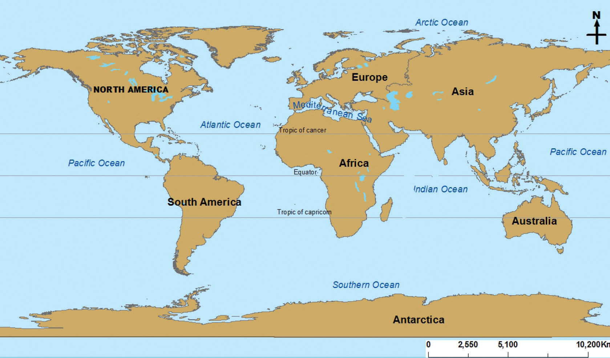

was surrounded by a single superocean called Panthalassa. Over millions of years, the geomorphic processes caused the Pangaea to break up into two big landmasses. The northern landmass was called Laurasia, and the southern landmass was called Gondwana. The two landmasses were separated by Tethys Sea. The two supercontinents broke into present continents whereby Laurasia included present-day North America, Europe, and Asia while Gondwana comprised of present-day Africa, South America, Antarctica and Australia.
A continent is a major landmass rising from the ocean floor. Continents are usually surrounded by a large mass of water bodies such as oceans and seas. Islands adjacent to continents are part of them because they contain rock structure similar to that of the continent. In general, there are seven continents on the Earth, namely: Asia, Africa, South America, North America, Australia, Europe and Antarctica (Figure 4.1). Among the seven continents, five continents are separated by oceans and seas, except Europe and Asia, which are separated by the Ural Mountains.

Activity 4.3
 Activity 4.3
Activity 4.3(a) Prepare a well labelled sketch map of a world showing the seven continents.
(b) Give at least one fact about the continent identified, including the name of a country or a major city located on the continent.